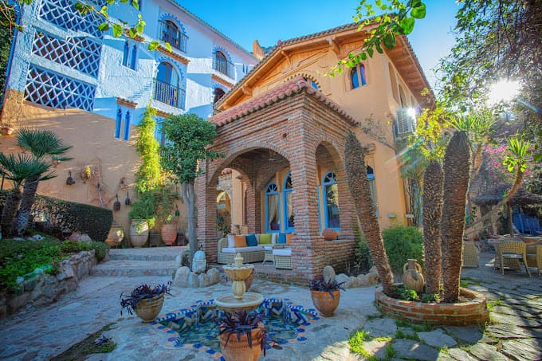
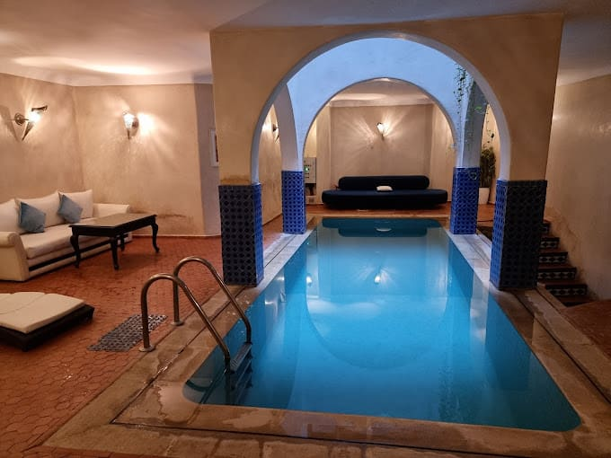
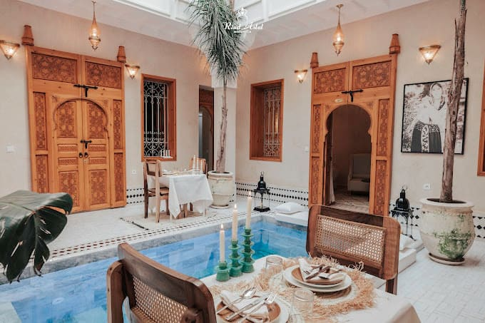

The short answer: Morocco is a very rewarding destination for seniors and mature travelers, as long as the trip is paced well. The physical challenges are uneven medina lanes, steep riad staircases and long drives between regions, not danger or difficulty. A private itinerary of 10 to 14 days solves most of them: two or more nights in each place, shorter driving days, accommodation chosen for access, and a local guide who sets a comfortable walking pace.
Many of our guests are retirees or travelers in their sixties and seventies, often from the United States, Canada and Australia, who have wanted to see Morocco for decades. They tend to be our most curious and appreciative guests, asking the best questions about history, architecture, food and daily life. What they want is simple: to experience Morocco fully, without exhausting days or unpleasant surprises. Here is how to plan exactly that.
Why So Many Mature Travelers Love Morocco
- History and culture at every turn: imperial cities, Roman Volubilis, medieval madrasas, kasbahs and living craft traditions.
- Gracious hospitality: respect for elders runs deep in Moroccan culture, and older guests are treated with real warmth.
- Comfortable, characterful places to stay, from riads to boutique hotels.
- Accessible from North America: nonstop flights reach Casablanca from several US and Canadian cities.
- Experiences that don't require athleticism: cooking classes, gardens, scenic drives, music and food.

The Honest Physical Challenges
It's better to know these in advance than to discover them on arrival:
- Medina walking. The old cities of Fes and Marrakech are car-free, with uneven cobbles and some slopes. Fes in particular is hilly. Expect to walk for two to three hours on a guided visit, with stops.
- Riad stairs. Traditional riads often have narrow, steep staircases and few elevators. Rooms on upper floors may involve two or three flights.
- Long drives. The journeys to and from the Sahara are long. Comfortable vehicles and regular stops make them pleasant, but they are still full days.
- Heat. Inland summers are very hot, which is tiring at any age.
- The camel ride. Getting on and off a camel requires some balance. It's optional, and camps can usually be reached by 4x4 instead.
Private Tours vs. Senior Group Tours
Many travelers in their sixties and seventies first look at large escorted group tours designed for seniors. They work for some people, but they share the same limitation: one pace for everyone. A private tour adapts to you:
- You decide the start time each morning, and when to stop.
- Your guide adjusts walking routes and pace in the medinas.
- Accommodation can be chosen with ground-floor rooms or elevators in mind.
- Rest days and extra nights can be added wherever you need them.
- There's no waiting for 30 other people at every stop.
For couples or small groups of friends, a private tour often costs less than people expect, especially when rooms are shared. See our guide to private Morocco tour costs.
Pacing: How to Build a Comfortable Route
- Allow 10 to 14 days for a trip that includes the desert, rather than squeezing it into a week.
- Stay at least two nights in Marrakech, Fes and the desert.
- Break the long drives. For example, stop overnight in the Dades Valley or Skoura Oasis between Marrakech and Merzouga.
- Plan for half days. A guided morning in the medina, then a relaxed afternoon at your riad.
- Choose arrival and departure cities carefully to avoid backtracking, for example arriving in Casablanca and leaving from Marrakech.
Our 13-day Imperial Cities and Sahara loop and 15-day Grand Adventure have exactly this kind of unhurried rhythm. Shorter journeys can be extended with extra nights. Our 10-day itinerary guide shows typical driving times.
Choosing Accessible Places to Stay
- Ask for ground-floor rooms or properties with elevators.
- Prefer riads near a road or parking in the medinas, so luggage and walking are minimal on arrival and departure.
- Consider a boutique hotel rather than a riad if stairs are a real difficulty. Our riad or hotel guide compares them.
- Choose desert camps with en-suite bathrooms and proper beds, so there's no walk across the sand at night. See our luxury travel guide.

Can Older Travelers Enjoy the Sahara?
Absolutely, and many say it's the highlight of their trip. A few tips make it comfortable:
- Take a shorter camel ride, or skip it and arrive at camp by 4x4.
- Choose a camp with private en-suite tents, real beds and, in winter, heating or plenty of blankets.
- Stay two nights, so the visit isn't just a late arrival and an early departure.
- Take the 4x4 excursions around the dunes, which show you nomad life, Gnawa music and the desert landscape without much walking.
Read our guides to a night at a desert camp and the best time to visit the Sahara.
Health, Insurance and Practical Tips
- Insurance: choose a policy with comprehensive medical and evacuation cover that fully covers travelers your age. US Medicare generally doesn't cover care abroad.
- Medication: bring enough for the whole trip plus a few extra days, in original packaging, with a copy of your prescriptions.
- Medical care: good private clinics exist in the main cities. Care is limited in remote areas, which is another reason for good insurance.
- Mobility aids: a lightweight folding cane or walking pole is very useful in the medinas. Tell your tour operator about any mobility needs when you first enquire.
- Hydration and sun: drink plenty of bottled water, and wear a hat even in cooler months.
- Shoes: supportive, closed walking shoes with good grip.

The Most Comfortable Time to Travel
For most mature travelers, March to May and October to November are ideal: warm, dry days that aren't too hot, and comfortable nights in the desert. Winter has pleasant days but cold nights and occasional snow on the mountain passes (see our Morocco in winter guide), and summer is best avoided inland.
Plan a Comfortable Private Journey
Tell us about your pace, any mobility considerations and what you most want to see, and we'll design a private itinerary that's comfortable from start to finish. You can also explore our Signature Journeys and ask us to adapt one.